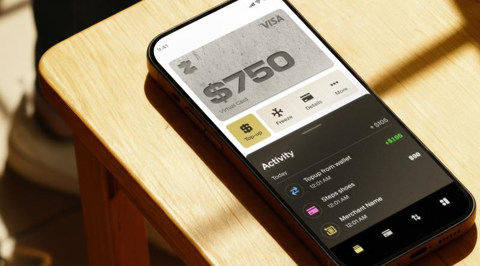
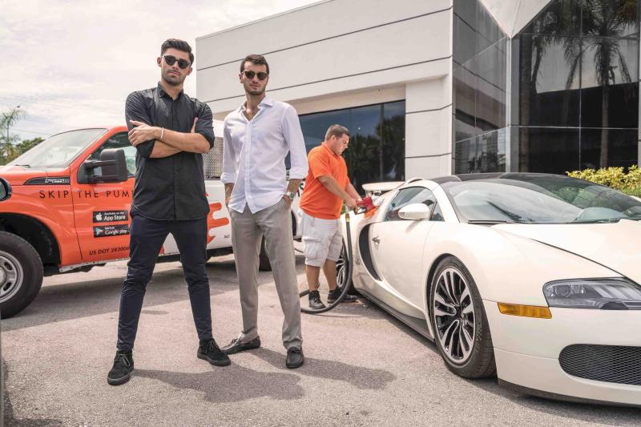
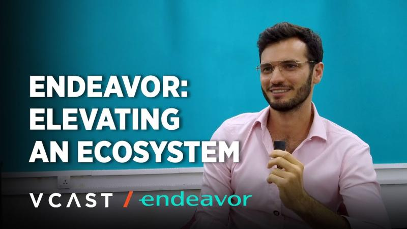

brandon
# Brandon Timinsky
CEO & Founder of ZAR.
Building stablecoin infrastructure so a billion people in countries with unstable money can hold, spend, and move digital dollars.
Previously founded SadaPay (acquired 2024) and GasNinjas (acquired 2017). Endeavor Entrepreneur.
## Background
Serial entrepreneur since 15. Self-taught programmer who started freelancing for local businesses as a high schooler in Florida. By 16, my first online business selling social media services was generating $500 a day.
Later, at the University of Miami, I dropped out because one of my businesses was generating six-figure monthly profits as a solopreneur. Decided to build companies full-time and never looked back.
Launched 10+ ventures. Landed 2 acquisitions. From fuel delivery in Miami to banking the 5th most populous country in the world to scaling stablecoin adoption across the Global South.
"If there's one thing I'm great at, it's distribution. Getting a product into the hands of millions of people who never heard of you."
|
zar
# ZAR
A stablecoin platform for over a billion people who live in countries with unstable money.

## What We're Building
We're abstracting the complexities of crypto for first-time smartphone users, enabling them access to digital dollars, a Visa debit card, a merchant network for local cash conversion, and payment acceptance.

Walk into your neighborhood corner store, scan a QR code, hand over cash, and receive digital dollars instantly in your wallet. No bank account required.

## Traction
Over 250,000 people across 100+ countries have signed up, including over 40,000 pre-registrations from merchants.
## Funding
$20M raised to date.
- VC Funds: Andreessen Horowitz (a16z crypto), Dragonfly, VanEck, Coinbase Ventures, Endeavor Catalyst, Anagram, Pharsalus, Mirana Ventures, Solana Ventures, Big Brain Holdings, Monke Ventures
- Angels: Solana co-founders Anatoly Yakovenko and Raj Gokal, Balaji Srinivasan, Nic Carter (GP, Castle Island Ventures), Santiago Santos (Founder, Inversion), Andrew Kang (Founder, Mechanism Cap), Latif Peracha (GP, M13), Arnold Lee (Founder, Sphere), Austin Federa (Founder, Doublezero), Stepan Simkins (CEO, Squads), Matt Sorg (VP Technology, Solana), Akshay BD, Nom (Bonk)
## Target Markets
Pakistan (live), Bangladesh, Ethiopia, DR Congo, Tanzania, Madagascar, Kenya, Uganda, Angola, Lebanon, Argentina.
Previously founded SadaPay and GasNinjas.
|
sadapay
# SadaPay
A digital payments company in Pakistan. Founded in 2019. Spent five years on the ground taking it from zero to millions of users, billions of dollars in payment volume, and a team of over 300.
## The Challenge
Pakistan has one of the most complex regulatory environments in fintech. Capital controls, banking restrictions, and a largely cash-based economy with over 100 million unbanked adults.
It took two and a half years to get a license from the State Bank of Pakistan. As a central bank-regulated entity, we had to follow the Code of Corporate Governance for public companies, meaning a full board with independent directors and board committees for internal audit, risk management, IT governance, and HR. We had to mature very quickly.
## The Traction
While waiting for regulatory approval, we ran organic marketing that put 500,000 people on the waitlist before a single transaction was processed.
Within the first two years of launching, over 4 million people signed up. At one point we were growing so fast that we couldn't ship the debit cards fast enough.
Nearly 100,000 five-star reviews on the app stores.
## The Outcome
Acquired in 2024 by Papara, a Turkish fintech unicorn valued at nearly $2 billion. Papara serves over 20 million users.
Built by the same founder now building ZAR.
|
gasninjas
# GasNinjas
Co-founded an on-demand fuel delivery company in 2015.

## The Story
We took the business from idea to revenue in three months.
Never had an office. My co-founder and I built and ran the company while traveling the world, managing our team entirely remotely. We proved you could build a real business from anywhere.
I tried to raise venture capital and must have gotten rejected at least 100 times. VCs didn't want to fund "Uber for gas" when they thought Tesla was taking over the world. It was one of the best learning experiences of my career. We bootstrapped instead and figured it out.
## The Exit
Acquired in 2017 by Exajoule, a Silicon Valley-based energy company. A multimillion-dollar acquisition within two years of founding.
The lessons from GasNinjas shaped how I built SadaPay and now ZAR.
|
endeavor
# Endeavor
Inducted into the Endeavor network in 2023 through the Endeavor Pakistan chapter.

## The Network
Endeavor catalyzes high-impact entrepreneurship in emerging markets. In aggregate, Endeavor companies generate over $88 billion in annual revenue and have created over 4 million jobs.
I learned a lot through Endeavor, made great connections, and met the acquirer of SadaPay through the network.
## Endeavor Catalyst
ZAR is backed by Endeavor's investment arm, Endeavor Catalyst, with $540M in AUM. The fund has built an impressive portfolio with 65 companies valued at over $1 billion. 43% of its unicorns outside of the US were invested at Series A or earlier.
## The Multiplier Effect
Endeavor drives what it calls the "multiplier effect," similar to the PayPal Mafia phenomenon that sparked Silicon Valley's startup boom. The idea is to foster successive generations of entrepreneurs who, after achieving their own success, reinvest their knowledge, capital, and resources back into the entrepreneurial ecosystem of their home countries.
Now continuing the journey through the Endeavor South Africa chapter.
|
others
# Others
## Education
Studied marketing and economics at the University of Miami. Dropped out halfway to pursue entrepreneurship full-time.
## Expertise
- Virality and distribution mechanics
- Simplifying complexity for first-time smartphone users
- Building financial products for emerging markets
- Navigating complex regulatory environments
- Ground-level understanding of how money moves in developing economies
- Scaling productivity with AI
|
links
# Links
## Press
### ZAR
### SadaPay
### GasNinjas
### Podcasts
### Others
|